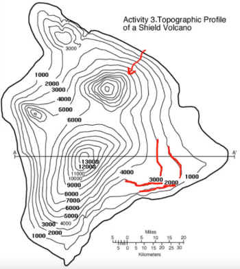

Funzioni reali a più variabili
Recall that a function of one variable is a rule for manufacturing a new number f(x) from a single independent variable x, i.e. a function f: ℝ → ℝ A real-valued function of several variables is similar, but the new variable now depends on more than one independent variable, that is a function f: ℝn → ℝ, a rule that assigns a single, real value for each (x,y,z,..,) in its domain.
f: A ⊆ ℝn → ℝ
z = f(x)
We initially consider functions of two variables whose graphs can be visualised, before generalising to functions of more than two variables.
Definition 1.1.1. A real function of two real variables is a rule f (also called a mapping or correspndence) that assigns to each ordered pair of real numbers (x,y) in a set D ⊂ ℝ2 a unique number z = f(x,y) ∈ ℝ. The set D is called the domain of f. The set {f(x,y) | (x,y) ∈ D} is called the range of the function f. The variables x and y are called the independent variables and z is called the dipendent variable. □
Cominciamo a sviluppare il calcolo infinitesimale per le funzioni reali di più variabili, ossia. Per prendere confidenza con questi nuovi oggetti, inizieremo da qualche considerazione elementare sulle possibili rappresentazioni grafiche delle funzioni di due o tre variabili.
Graphs and level curves
Recall that graphs of functions of one variable, in the set of points in the plane ℝ2, of coordinate (x, f(x), that is, in a dimension one higher than that of the domain. Analogously, graphs of function of two variables "live" in three-dimensional space, that is, i.e. a dimension one higher than that of the domain.
A level set of f for the value c is the set
{(x,y) : f(x,y) = c}
The definition can easily be understood by visualizing a function f of two variables in the plane as a mountain range (without overhangs of course). Cutting this mountain range at a height h displays a level set of the function.
